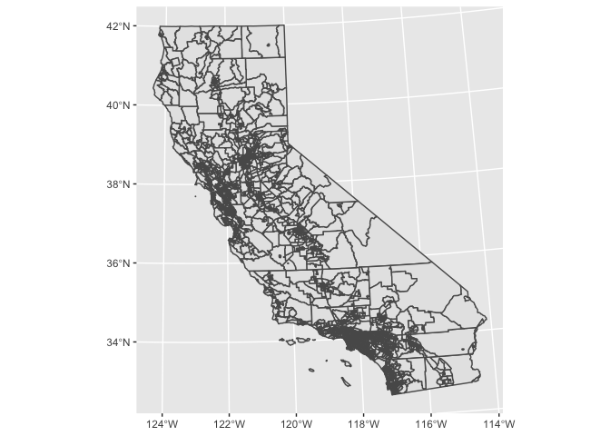
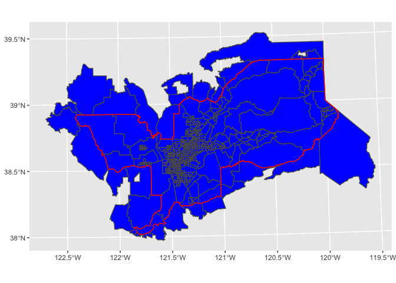
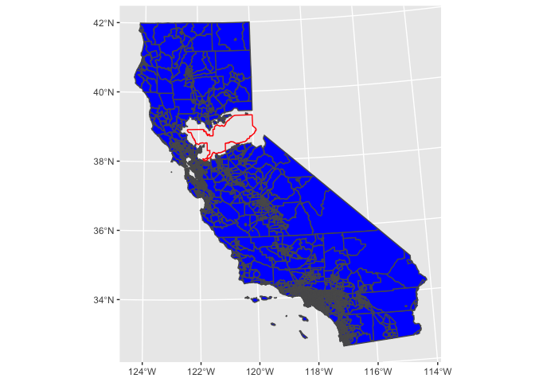
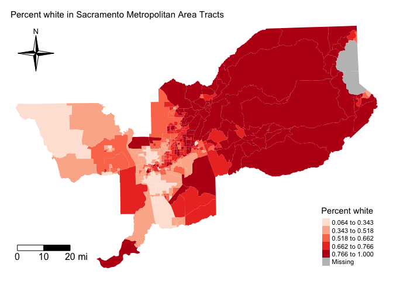
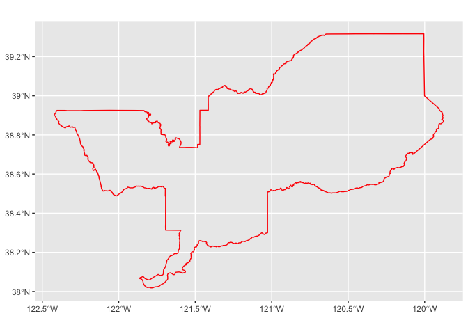
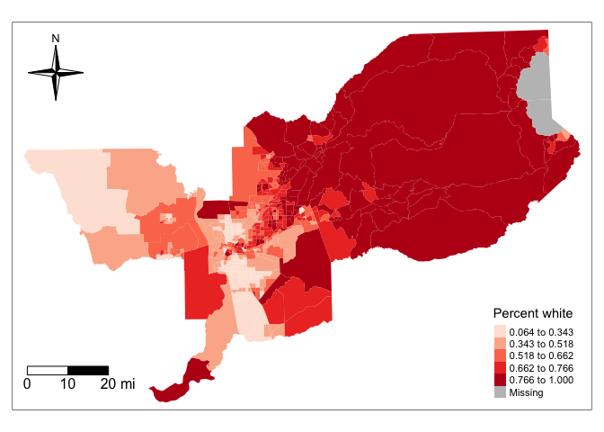
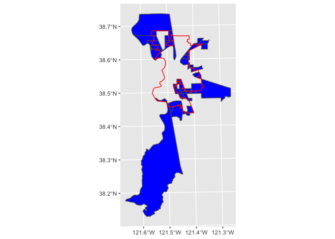
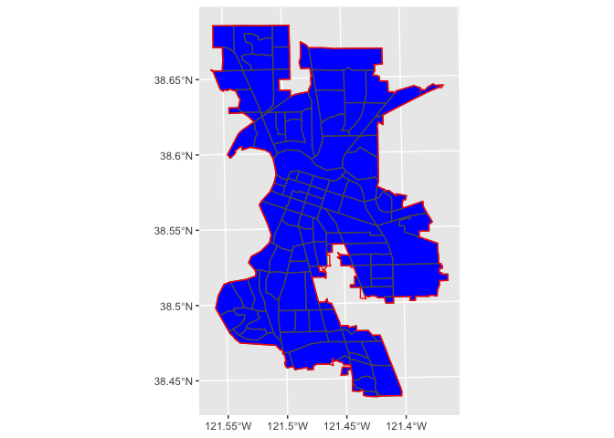

Introduction to Spatial Data in R: Part I
GEO 200CN - Quantitative Geography
Professor Noli Brazil
April 9, 2020
In the first three labs, we went through the base and tidy approaches to processing nonspatial data in R. In this guide, you will acquire the skills needed to process and present spatial data in R. This lab will focus on vector data. We’ll cover Raster data later in the quarter.
Unsurprisingly, there is more than one way to process spatial data in R. This guide will go through the sf package first as it will be the main package for handling spatial data in this class. The other major spatial package that we’ll use is sp. We will cover sp next week. Packages that deal with other spatial data types will be covered throughout the quarter.
The best references for sf and, more broadly, cleaning, managing and analyzing spatial data in R are Geocomputation with R (GWR) and Spatial Data Science (SDS). The SDS book is complete up through chapter 8. Both are freely available through the links provided.
sf package
sf stands for simple features. What is a feature? A feature is thought of as a thing, or an object in the real world, such as a building or a tree. A county can be a feature. As can a city and a neighborhood. Features have a geometry describing where on Earth the features are located, and they have attributes, which describe other properties. Think back to our prior lab - we were working with counties. The difference between what we were doing then and what we will be doing in this lab is that counties in the prior lab had attributes (e.g. percent Hispanic, total population), but they did not have geometries. As such, we could not put them on a map because we don’t have their specific geographic coordinates.
Install sf if you have not already done so
install.packages("sf")We will also be using the package rmapshaper in this lab.
install.packages("rmapshaper")Load sf and rmapshaper using library(). We’ll also be using the package tidyverse, so load it up as well.
library(sf)
library(rmapshaper)
library(tidyverse)Reading spatial data
The function for reading in spatial data into R is st_read(). The shapefile is the most commonly used file format for vector data. I zipped up and uploaded onto GitHub a folder containing four shapefiles. Set your working directory to an appropriate folder and use the following code to download and unzip the file.
setwd("insert your pathway here")
download.file(url = "https://raw.githubusercontent.com/geo200cn/data/master/spatialsflab.zip", destfile = "spatialsflab.zip")
unzip(zipfile = "spatialsflab.zip")Don’t worry if you don’t understand these commands - they are more for you to simply copy and paste so that you can download files that I zipped up and uploaded onto GitHub. You can look at the help documentation for each function if you are curious.
You should see four shapefiles in the folder you specified in setwd(): californiatracts.shp, sacmetroarea.shp, sacramentocity.shp, and city_trees.shp. First, bring in californiatracts.shp, which contains non-Hispanic white and total population for all census tracts in California.
ca.tracts <- st_read("californiatracts.shp", stringsAsFactors = FALSE)The argument stringsAsFactors = FALSE tells R to keep any variables that look like a character as a character and not a factor. Next, bring in sacmetroarea.shp, which contains Sacramento metropolitan area boundaries.
sac.metro <- st_read("sacmetroarea.shp", stringsAsFactors = FALSE)Finally, bring in sacramentocity.shp, which contains Sacramento city boundaries
sac.city <- st_read("sacramentocity.shp", stringsAsFactors = FALSE)We will bring in city_trees.shp later in the lab.
You can bring in other types of spatial data other than shapefiles. See a list of these file types here.
Data manipulation
There is a lot of stuff behind the curtain of how R handles spatial data as simple features, but the main takeaway is that sf objects are data frames. This means you can use many of the functions we’ve learned in the past couple labs to manipulate sf objects, and this includes our best buddy the pipe %>% operator. For example, let’s do the following data wrangling tasks on ca.tracts.
- Convert the dataset from long to wide
- Create the variable pwh which is the percent of the tract population that is non-Hispanic white
- Break up the column NAME into separate tract, county and state variables using the
separate()function
We do all of this in one line of continuous code using the pipe operator %>%
ca.tracts <- ca.tracts %>%
spread(key = variable, value = estimate) %>%
mutate(pwh = nhwhite/tpopr) %>%
separate(NAME, into = c("tract", "county", "state"), sep=", ")The main takeaway: sf objects are tidy friendly, so you can use many of the tidy functions you learned in the last lab on these objects to manipulate your data set. This includes the function ggplot(), which we can use to map the data. We’ll go into more detail later on how to use ggplot() for mapping, so for now just type in
ggplot(ca.tracts) + geom_sf()
If you are getting the following error when you map
---
Error in grid.Call(C_textBounds, as.graphicsAnnot(x$label), x$x, x$y, :
polygon edge not found
---rerun the code. Keep rerunning it until the error does not come up. This is an internal issue that has not been resolved. If you are getting an error about R not being able to find the function geom_sf() see here for some guidance.
Spatial data manipulation
The sf package offers a suite of functions unique to managing and transforming spatial data. Most of these functions start out with the prefix st_. The main umbrella function is st_join().
We won’t go through all of the functions as the list is quite extensive. But, let’s go through the relevant ones for this class.
Intersect and Disjoint
A common spatial data wrangling issue is to subset a set of spatial objects based on their location relative to another spatial object. In our case, we want to keep California tracts that are in the Sacramento metro area. Think of what were doing here as something similar to taking a cookie cutter shaped like the Sacramento metro area (in our case, the sf object sac.metro) and cutting out the metro area from our cookie dough of census tracts (ca.tracts). We can do this using the join = st_intersects argument within thest_join() function.
sac.metro.tracts.int <- st_join(x = ca.tracts, y = sac.metro,
join = st_intersects, left=FALSE)The above code tells R to identify the polygons in ca.tracts that intersect with the polygon sac.metro. We indicate we want a polygon intersection by specifying join = st_intersects. The option left=FALSE tells R to eliminate the polygons from ca.tracts that do not intersect (make it TRUE and see what happens).
Mapping the Sacramento metropolitan area boundary sac.metro that we downloaded and filtered earlier onto these cut out tracts, we get
ggplot() +
geom_sf(data = sac.metro.tracts.int, fill = "blue") +
geom_sf(data = sac.metro, fill = NA, color = "red")
The code we ran above returns all tracts that intersect or touch sac.metro, which include those that touch the metro’s boundary. So, we have tracts that are not actually inside the metro area boundaries but touch them.
The opposite of st_intersects is st_disjoint. If two geometries are disjoint, they do not intersect, and vice-versa.
sac.metro.tracts.dis <- st_join(x = ca.tracts, y = sac.metro,
join = st_disjoint, left=FALSE)ggplot() +
geom_sf(data = sac.metro.tracts.dis, fill = "blue") +
geom_sf(data = sac.metro, fill = NA, color = "red")
Within and Overlap
As we saw above, st_intersects() returns tracts that touch the Sacramento metropolitan area. We can use join = st_within() to return tracts that are completely within the metro.
# subset ca.tracts to those in sac.metro
sac.metro.tracts.w <- st_join(ca.tracts, sac.metro, join = st_within, left=FALSE)
ggplot() +
geom_sf(data = sac.metro.tracts.w, fill = "blue") +
geom_sf(data = sac.metro, fill = NA, color = "red")
Perfect, this is what we wanted in the first place.
If you look at the at sac.metro.tracts.w’s attribute table, you’ll see it includes all the variables from both ca.tracts and sac.metro. We don’t need all of these variables, so use select() to filter them out. You’ll also notice that if variables from different data objects being joined together share the same name, st_join() (and left_join()) will keep both and attach a .x and .y to the end. For example, GEOID was found in both ca.tracts and sac.metro, so R named one GEOID.x and the other that was merged in was named GEOID.y.
names(sac.metro.tracts.w)## [1] "GEOID.x" "tract" "county" "state" "nhwhite" "tpopr"
## [7] "pwh" "CSAFP" "CBSAFP" "AFFGEOID" "GEOID.y" "NAME"
## [13] "LSAD" "ALAND" "AWATER" "geometry"Keep the necessary variables and rename GEOID.x back to GEOID.
sac.metro.tracts.w <- sac.metro.tracts.w %>%
select(GEOID.x:pwh) %>%
rename(GEOID = "GEOID.x")The opposite of st_within is st_overlaps. Because tracts are completely nested within the Sacramento metropolitan area, you should get nothing in return when using st_overlaps
# subset ca.tracts to those in sac.metro
sac.metro.tracts.o <- st_join(ca.tracts, sac.metro, join = st_overlaps, left=FALSE)
ggplot() +
geom_sf(data = sac.metro.tracts.o, fill = "blue") +
geom_sf(data = sac.metro, fill = NA, color = "red")
This is not the case if you look at Sacramento city, where tracts overlap city boundaries. Compare st_within and st_overlap using sac.city
# subset ca.tracts to those in sac.metro
sac.city.tracts.w <- st_join(ca.tracts, sac.city, join = st_within, left=FALSE)
sac.city.tracts.o <- st_join(ca.tracts, sac.city, join = st_overlaps, left=FALSE)First, within
ggplot() +
geom_sf(data = sac.city.tracts.w, fill = "blue") +
geom_sf(data = sac.city, fill = NA, color = "red")
Next overlaps
ggplot() +
geom_sf(data = sac.city.tracts.o, fill = "blue") +
geom_sf(data = sac.city, fill = NA, color = "red")
Clipping
Census tracts neatly fall within a metropolitan area’s boundary. In other words, tracts don’t spill over. But, as we see in the above two maps, tracts spill over city boundaries. What if you wanted to just keep the portion of overlapping tracts that is in the city? You would clip the tract. There is no clipping feature within the st_join function. We use the function ms_clip() which is in the rmapshaper package.
Because spatial data are not always precise, when you clip you’ll sometimes get unwanted sliver polygons.
sac.city.tracts.c <- ms_clip(target = ca.tracts, clip = sac.city, remove_slivers = TRUE)The argument remove_slivers = TRUE removes these slivers.
ggplot() +
geom_sf(data = sac.city.tracts.c, fill = "blue") +
geom_sf(data = sac.city, fill = NA, color = "red")
The sf package has a number of other st_ functions both within the st_join() function and separately. In addition to GWR, check out Chapter 5 in SDS to learn more.
Aggregate
Spatial aggregation involves either summing up the number or the attribute values of geometric features located within another geometric feature. In the tidyverse, this is easily done by using the summarize() function.
For example, let’s say we wanted to add the total population within the 58 counties in California using census tract data. We have the variable county that we created above that identifies the county that each tract resides in.
counties = ca.tracts %>% group_by(county) %>%
summarize(pop = sum(tpopr, na.rm = TRUE))You’ll notice that the data frame counties contains 58 counties. What is going on in terms of the geometries? Behind the scenes, summarize() combines the geometries and dissolve the boundaries between them using the function st_union().
You can also add up the number of features within a polygon. This is known as a points in polygon operation. To illustrate this operation, bring in the shapefile city_trees.shp, which contains tree site locations maintained by the Urban Forestry section of the Department of Public Works downloaded from the City of Sacramento Open Data GIS Portal.
trees <- st_read("city_trees.shp", stringsAsFactors = FALSE)We combine the functions st_join() and summarize() to get the number of trees located in each Sacramento city census tract. You use group_by() to group by the variable that uniquely identifies the census tracts, in our case GEOID. This operation might take a few minutes because there are over 97,000 city maintained trees in the city!!
sac.tract.trees <- sac.city.tracts.c %>%
st_join(trees) %>%
group_by(GEOID) %>%
summarize(n_trees = n()) Writing data
Earlier you learned how to read in spatial data. We end today’s lab by learning how to write spatial data. The function is st_write().
Let’s save the Sacramento city tract data frame containing the number of trees located in each tract.
st_write(sac.tract.trees, "Sacramento_Tract_Trees.shp", delete_layer = TRUE)The delete_layer = TRUE argument tells R to overwrite the file Sacramento_Tract_Trees.shp if it already exists in your current directory.
You’ve completed your introduction to sf.
Badge? Yes, please.

Website created and maintained by Noli Brazil